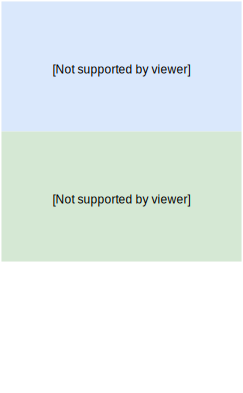
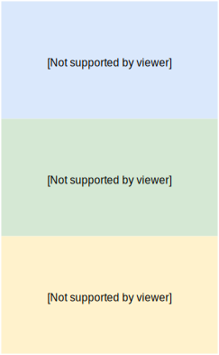

Overview
Overview
Overview
Overview
Overview

Overview

Overview

Overview

Why should I automate?
“Part of the inhumanity of the computer is that, once it is competently programmed and working smoothly, it is completely honest.”
Isaac Asimov
Why?
- Efficiency: Request fulfillment resources freed-up for higher-value activities
- Agility: Increased speed of product deliverability
- Reliability: Fewer errors from manual processes
[TODO] After / Before
| After | Before | |
|---|---|---|
| tiempo para prepararloa | $1 | 7 |
| documentación | $1 | 7 |
| tiempo para pedir una maquina | $1 | 7 |
| time between deploys | $1 | 7 |
| deploy rechazados | $2 | 18 |
| tiempo para desplegar | $3 | 2 |
How?
People
Tools
[Todo] Our Tools
Mention the tools we choosed, not important
[Todo] Migration
Progresive or all at once?